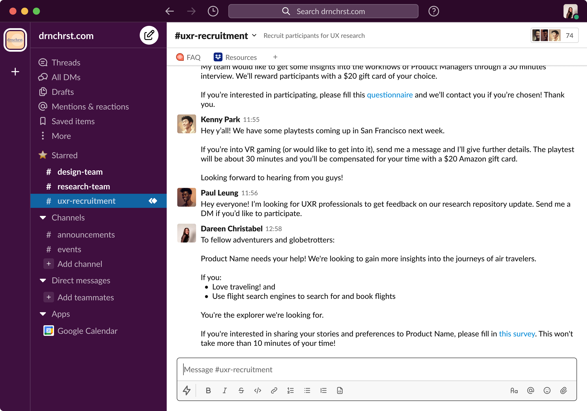
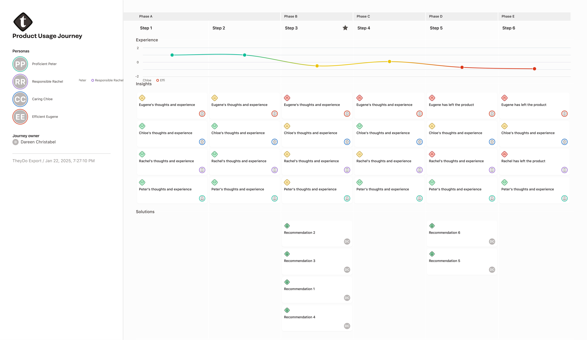

Shaping a travel search experience
@ Client Company
Travel · Sole UX research consultant · 2021
A travel search engine developer wanted to better understand current and potential users and identify product features to develop based on user demand.
- Approach
- Survey, user interview, usability testing, stakeholder workshop.
- Outcome
- The research produced demographic and behavioral insights about users and 14 feature recommendations. A stakeholder workshop helped the client prioritize features for the roadmap. The research also uncovered a negative connotation in product messaging, prompting follow-up research into an alternative term.
- My role
- I worked as the sole UX research consultant.
Certain details have been omitted to protect confidentiality. Content is optimized for desktop viewing.
Background
The client wanted to develop its flight search engine by building knowledge of current and potential users — including their motivations and unmet needs — and determining which features to prioritize.
Research questions
- What are the characteristics of current and potential users, including their habits, preferences, motivations, and demographics?
- What pain points and unmet needs do current users experience when using the product?
- What unmet needs do potential users have before using the product?
- How might we expand the product based on customer demand and business impact, for example through new features or a mobile app?
Methods
A survey was sent to the product’s mailing list and various research recruitment Slack channels. It received 88 responses.
Of those respondents, 62 expressed interest in compensated follow-up research. Fifteen participants who met the criteria were invited to a one-hour moderated usability testing and interview session.
The participant criteria were:
- Interest in travel
- Use of a search engine to search for and book flights


Results and Recommendations
1. Identifying characteristics, pain points, and needs
The research highlighted user attributes, such as demographics and type of traveler, alongside prevalent pain points and needs. User personas and a consolidated user journey brought the findings together at a high level.
The personas described each user group’s characteristics, pain points, and needs. The journey illustrated highs and lows when using the product, with recommendations organized by phase to show when they would be relevant.
Impact: The client gained a clearer view of current and potential users in an accessible format for future product development.


2. Prioritizing features for the product roadmap
The research generated 14 feature recommendations — enough ideas to feel overwhelming. A stakeholder workshop helped the client determine which to prioritize.
Using a feature prioritization matrix, the client mapped ideas by perceived value and effort, identifying quick wins and major projects.

A weighted scoring model evaluated each feature against the client’s criteria and sorted the ideas by priority score.

Impact: The client left the workshop feeling confident in its decisions and optimistic about the feasibility of the next steps.
3. Uncovering a negative connotation in product messaging
Although it was not part of the initial research questions, the research revealed that a term used in product messaging had a negative connotation among potential users, creating a possible barrier to entry.
As a result, follow-up research was conducted to determine a suitable replacement term.
Reflections
- Scope research strategically. The number of questions in the survey and moderated sessions made the results difficult to consolidate and highlight. In future, I would prioritize questions more thoughtfully to support the quality of the insights.
- Different people have different needs. Depending on their goals and circumstances, the same product issue can have little effect on one person but cause another to abandon the product.
- Tailor storytelling to the audience. Different methods bring different kinds of data, so a thoughtful presentation approach helps stakeholders digest the information.
- Share research limitations with stakeholders. Researchers are more familiar with the process and results, so proactively discussing limitations helps stakeholders form a more realistic understanding.